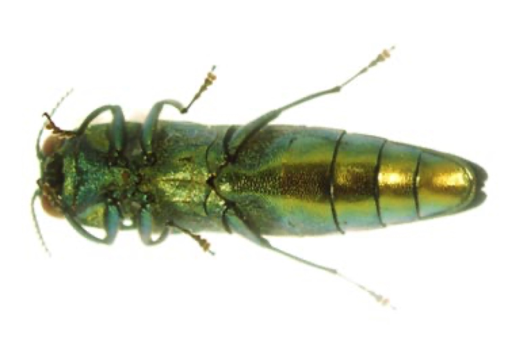
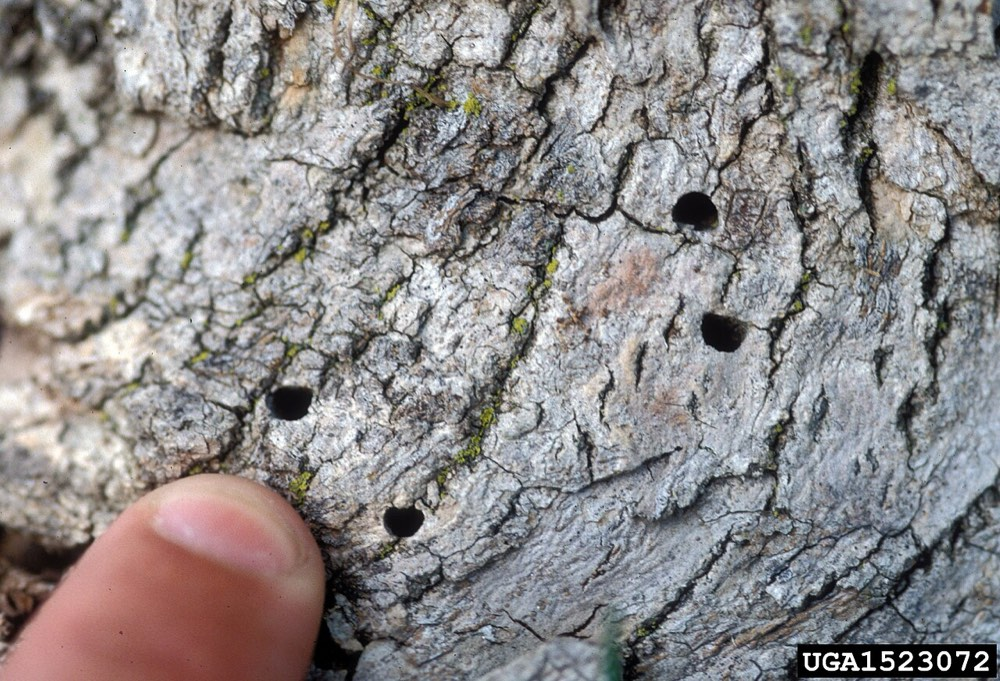

Emerald Ash Borer
Agrilus planipennis
An exotic beetle from Asia that kills ash trees. It is an insect, not a plant, but it is listed here with the invasives because it matters for the forest.
- Also called
- EAB
- Kind
- insect · Buprestidae
- Legal status
- Not on the Agency of Agriculture plant quarantine list (that list names plants only). The VTinvasives species page states no regulation or quarantine for it; whether a pest quarantine applies was not checked. (checked 2026-10-30)
- Look-alikes
- Bronze birch borer; Six-spotted tiger beetle; Two-lined chestnut borer; Ash yellows (witches'-brooms); other causes of ash decline
Pictures


Names
Emerald ash borer (EAB), Agrilus planipennis. Probably arrived in the United States on solid wood packing material; first found near Detroit, Michigan, in summer 2002.
Range
The species page points to a map rather than naming counties, and does not give a first-detection year for Vermont. Check the current VTinvasives map; the status in your county is not recorded here.
How to identify (by season; look-alikes and the key difference)
- Know your ash first. Vermont has three native ash trees: green, black and white. Ash has opposite branching, thick twigs, diamond-patterned bark, compound leaves with 5 to 11 leaflets and paddle-shaped seeds (from a state poster, as summarized). EAB also occasionally attacks white fringetree.
- Signs of attack: bark splitting; S-shaped tunnels behind the bark (galleries); D-shaped exit holes, about 1/8 inch (3 to 4 mm) wide, hard to see; woodpecker flecking, often the first obvious sign; dying branches from the top down; leafy sprouts on the lower trunk.
- The adult: 1/4 to 1/2 inch, narrow, bullet-shaped, flat back, metallic with purple-red abdominal segments beneath the wings. Larvae: creamy white, legless, up to 3 cm, with flattened bell-shaped segments.
- Look-alikes: the page lists bronze birch borer, six-spotted tiger beetle and two-lined chestnut borer (and links a PDF of native look-alikes, not read). A search summary adds that ash yellows makes bushy "witches'-brooms" that look different from EAB's lower-trunk sprouts, and that other problems cause ash decline.
- Recently attacked trees may look healthy: symptoms are not definitive.
Through the year
Dates are typical for Vermont and shift with elevation and year; "approximate" means the source gave a season and the dates are a translation of it.
| When | What | Look for | What to do | Dates |
|---|---|---|---|---|
| All year | survey (avoid) | Do not move ash wood or firewood out of the area; buy and burn local firewood. | - | stated |
| Jun 1 to Sep 30 | flight (watch) | Adult beetles flying: metallic, narrow and bullet-shaped with a flat back, 1/4 to 1/2 inch long, with purple-red abdominal segments under the wing covers. Adults chew small irregular notches in leaf edges. | - | stated |
| Jun 15 to Sep 15 | sign (identify) | In leaf: a thinning crown, dead tops, and leafy sprouts from the lower trunk (these sprouts alone do not mean EAB). | - | approximate |
| Dec 1 to Mar 31 | sign (identify) | Leaves are down, so look for woodpecker flecking (lighter patches where bark is flaked off), bark splits, and dead top branches on ash trees. Winter is an easy time to check. | Photograph the crown, the bark and any gallery you find, and report through VTinvasives. | approximate |
Habitat and spread
A generally one-year life cycle. Adults lay eggs on the bark of trunks or branches in summer; eggs hatch in 7 to 10 days; larvae tunnel in the inner bark and outer wood; pre-pupae overwinter in shallow chambers in the sapwood or thick bark; pupation begins late April or May; adults emerge late May or early June. The page says it spreads very quickly and is difficult to detect. A search summary says most new infestations start in or near campgrounds, which is why local firewood is advised.
Damage
Larvae girdle branches and trunks by cutting the flow of food and water. About 5 percent of Vermont's trees are ash. The page says most infested ash trees are expected to die and eradication is not expected.
What helps it spread (not something to encourage)
This is an invasive species, so nothing here is advice to encourage it. What the sources read say about where it grows and how it spreads is in the sections above; what they say about stopping it is under Control. The Vermont Landowner's Guide, chapter 17 (corrective strategies for invasive species), covers general methods for invasive plants and pests.
Control (by method, timing, follow-up, what not to do)
- The species page gives no landowner treatment or cutting advice; it points to separate VTinvasives pages for recommendations to slow the spread, which were not read.
- What the summaries agree on: do not move ash wood or firewood; report suspected infestations with clear photos of the crown, the bark and any signs; check ash in winter when leaves are off.
- Planning (not from the pages read): for an owner with ash in a managed stand, how to treat, cut or retain ash is a question for the consulting forester and the county forester, who can use the state's ash management guidance for forest managers.
Legal status
Not on the plant quarantine list (it names plants only). The species page states no quarantine or regulation. A general plant quarantine page is linked, and its application to this beetle is not stated. Ask the county forester about any current pest quarantine or movement rule.
Sources
- Vermont Invasives, Emerald Ash Borer: https://vtinvasives.org/invasive/emerald-ash-borer (read 2026-10-30, no update date shown)
- Vermont Agency of Agriculture, quarantine list (plants only): https://agriculture.vermont.gov/node/11701
- Vermont Invasives search summaries (not read in full): "Identify Emerald Ash Borer"; "Winter months ideal time to check trees"; "Reporting Emerald Ash Borer"; the EAB library poster; "Ash Management Guidance for Forest Managers" (PDF, 2013, not read)
What this page is based on
Kind of source: mixed (identification and life cycle from the VTinvasives species page; flight dates and the winter-survey advice from search summaries of VTinvasives pages)
What was read: The VTinvasives species page for emerald ash borer, read through a summarizing fetch on 2026-10-30. That page gives no county list, no first-detection year, no survey timing, no landowner guidance and no legal status, and no update date. The flight dates (June 1 to September 30), the winter-check advice, the exit-hole size comparison and the firewood figure are from search summaries of VTinvasives pages (Identify Emerald Ash Borer; Winter months ideal time to check trees; Reporting) and were not read on the pages. The Ash Management Guidance for Forest Managers PDF and the tree-care guidance were not read.
Last checked: 2026-10-30
Vermont land and forest reference, built 2026-11-01. Rules and dates here are summaries, not legal advice; dates shift with elevation and year. Photo and recording credits · Note: _reference/US-VT/Invasives/Emerald Ash Borer.md